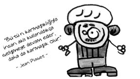

Jean Piaget (1896-1980)
İsviçreli psikolog. Dahi çocuk. İlk bilimsel makalesi henüz on yaşındayken yayınlandı. Yaşı nedeniyle çoğu makalesi reddedildi.
Gençlik yıllarında ailesindeki sorunlar ve zihinsel merakı yüzünden bir dizi bunalım geçirdi. Babası yazar olan Piaget, annesinin nevrotik bir mizacı olduğunu söyler.
Zekâ embriyolojisini keşfetmek istiyordu. Zekâ gelişimi üzerine kırk yıldan uzun süre çalıştı. Ölümüne kadar gelişimsel ruhbilim, bilişsel kuram ve bilgi kuramı adı verilen birçok yeni bilim dalının gelişmesine katkıda bulundu.
Piaget’nin çocukların düşünce biçimini ilk kez ciddiye alan bir bilim adamı olduğu söylenebilir. Einstein bunu, “Yalnızca bir dâhinin akıl erdirebileceği basitlikte bir buluş.” olarak nitelendirdi.
Piaget çocuk zihniyetinin yetişkinin zihniyetiyle hiçbir ilişkisi olmadığını öne sürmüştür. Ona göre, çocuğun mantığı kendine özgüdür. Çocuklar bilgiyle doldurulacak boş çuvallar değil, bilginin etkin yapıcılarıdır. Piaget’nin bu görüşleri eğitime önemli katkılar sağlamıştır.

Piaget’ye göre çocukta bilişsel yapı, dört evrede gerçekleşir:
• Duyusal motor dönem (0-2 yaş)
• İşlem öncesi dönem (2-6 yaş)
• Somut işlemler dönemi (7-11 yaş)
• Soyut işlemler dönemi (12 yaş ve üzeri)
• En tanınmış deneylerinden birinde Piaget çocuklara “Rüzgâr nasıl oluşur?” diye sorar.
Bu konuda küçük Julia ile yaptığı karşılıklı konuşma şöyledir:
– Rüzgâr nasıl oluşur?
– Ağaçlar.
– Nereden biliyorsun?
– Onları kollarını sallarken gördüm.
– Bu nasıl rüzgâr oluşturuyor?
– (Ellerini sallayarak) İşte böyle. Ama onların kolları daha uzun… Hem daha çok ağaç var.
Ne demiş Piaget…
• Zekâ, bireyin çevreye uyum sağlayabilme yeteneğidir.